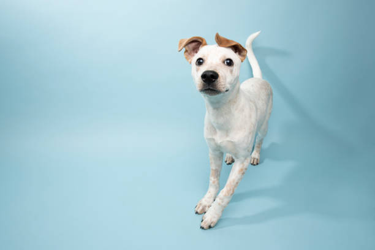
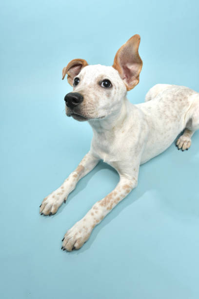
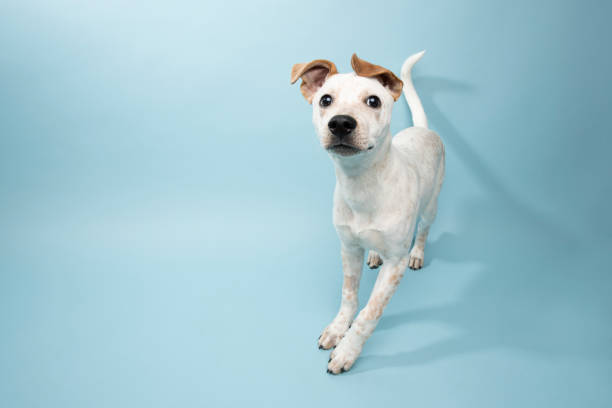
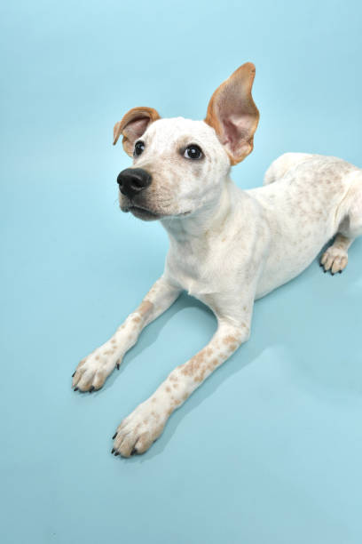

Hola, me llamo Milo, soy macho y tengo 2 años.
#Nací en la calle, escondido bajo una maceta. Sobreviví solo a una tormenta, temblando bajo un auto abandonado. Hasta que una mano suave me rescató... y mi historia comenzó de verdad.
#Tengo todas sus vacunas al día. Solo rengueo un poquito de una patita, pero eso no me impide mover la cola de alegría.
#Lo que más me gusta en el mundo es acurrucarme con mi familia y compartir momentos llenos de amor.